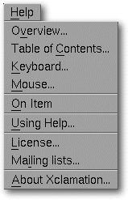
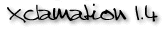

<!-- Documentation Xclamation (c)1994-2000 AXENE contact axene@axene.org>
<html>

<head>
<title>Help Menu</title>
</head>

<body BGCOLOR="#FFFFFF" BACKGROUND="Images/back.gif" TEXT="#000000">

<p ALIGN="right">  </p>

<p><br>
<br>
The help menu quickly accesses various portions of the application's documentation. <br>
<br>
</p>

<hr>

<p align="center"><br>
 <br>
<small><i>Screen shot: Help pulldown menu. </i></small></p>

<p><br>
</p>

<hr>

<p><br>
</p>

<h3>The Help menu contains the following items:</h3>

<ul>
  <li><a NAME="overview_menu_entry">The <i>&quot;Overview...&quot;</i> option gives </a><a HREF="Overview.html">general information</a> about how to use Xclamation. <br>&nbsp;</li>
  <li><a NAME="table_of_contents_menu_entry">The <i>&quot;Table of Contents...&quot;</i>
    option opens the documentation's </a><a HREF="index.html">table of contents</a>. <br>&nbsp;</li>
  <li><a NAME="keyboard_menu_entry">The <i>&quot;Keyboard...&quot;</i> option gives general
    keyboard information, specifically on how to enter </a><a HREF="Keyboard.html#special_car">special
    characters</a> and <a HREF="Keyboard.html#shortcuts">shortcut keys</a>. <br>&nbsp;</li>
  <li><a NAME="mouse_menu_entry">The <i>&quot;Mouse...&quot;</i> option gives </a><a HREF="Mouse.html">general mouse information</a>, specifically on the functions of mouse
    buttons. <br>&nbsp;</li>
  <li><a NAME="help_on_item_menu_entry">The help <i>&quot;On Item&quot;</i> option gives
    information by clicking on a specific area of the interface. For example, to know the
    function of a certain button, choose this option then click on the item in question for
    its documentation. </a><br>&nbsp;</li>
  <li><a NAME="using_help_menu_entry">The <i>&quot;Using help...&quot;</i> option gives
    information about the various types of </a><a HREF="Help_Usage.html">help available</a>. <br>&nbsp;</li>
  <li><a NAME="licence_menu_entry">The <i>&quot;License...&quot;</i> option opens a window
    displaying current Xclamation's </a><a HREF="License.html">license</a> agreement. <br>&nbsp;</li>
  <li><a NAME="registration_menu_entry">The <i>&quot;Registration...&quot;</i> option opens a
    box from which an e-mail message can be sent to Axene. This e-mail registers the user with
    Axene as an Xclamation user to automatically receive documentation on Axene Products. </a><br>&nbsp;</li>
  <li><a NAME="about_xclamation_menu_entry">The <i>&quot;About Xclamation...&quot;</i> option
    opens a text box indicating the current version of Xclamation and the address at which to </a><a HREF="About.html">contact Axene</a>. <br>&nbsp;</li>
</ul>

<p><br>
</p>

<hr>

<p ALIGN="right"></p>
</body>
</html>
